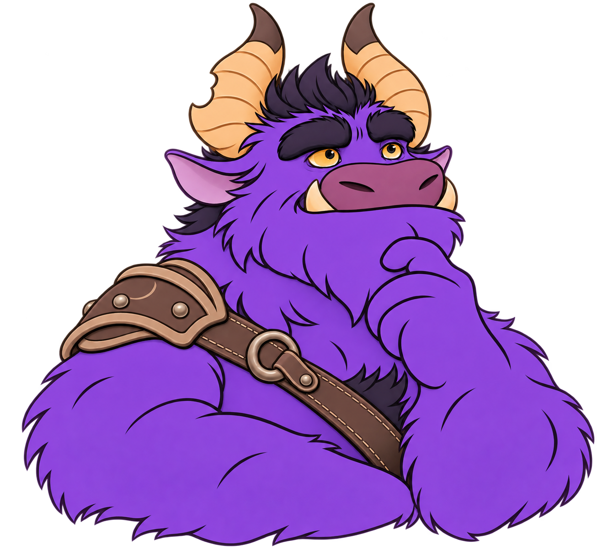

<section class="v4-journey" aria-label="Journey scenes"><div class="v4-stage"><div class="v4-day"></div><div class="v4-night"></div><div class="v4-shade"></div><div class="v12-scene-companion" aria-hidden="true"></div><div class="kt-cover-heading"><div class="v4-title"><p>UNOFFICIAL GUIDE · PUBLIC v0.57a</p><h2>Killigan’s Treasure</h2></div><div class="kt-cover-links"><a href="#kt-reading">Browse all guides ↘</a><a href="#journey-navigation-map">Journey map</a></div></div><div class="v4-shortcuts"><label><input id="v4-skip" type="checkbox"> Skip intro next time</label><button id="v4-motion" hidden>Reduce motion</button></div></div></section>